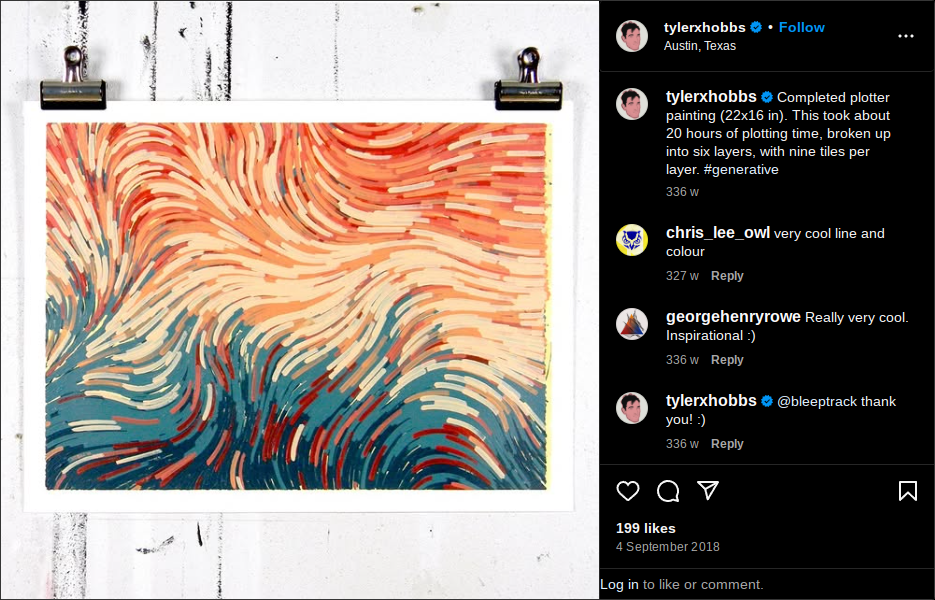
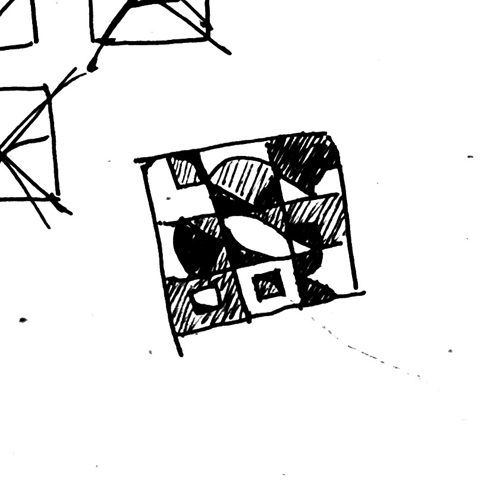
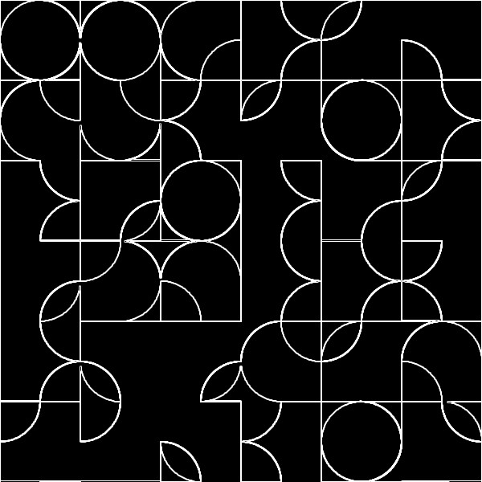
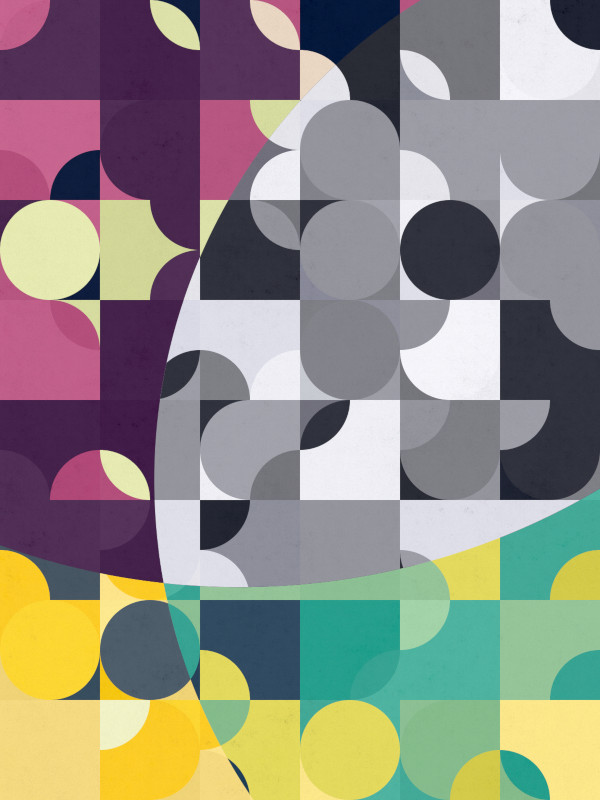
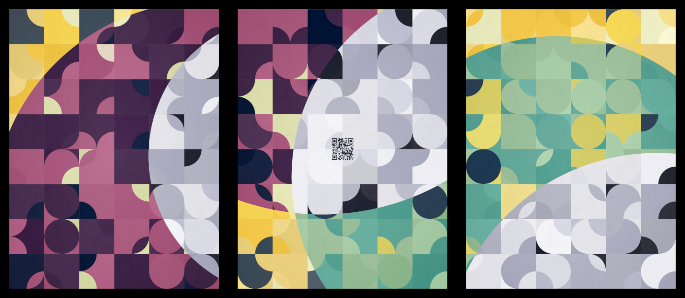
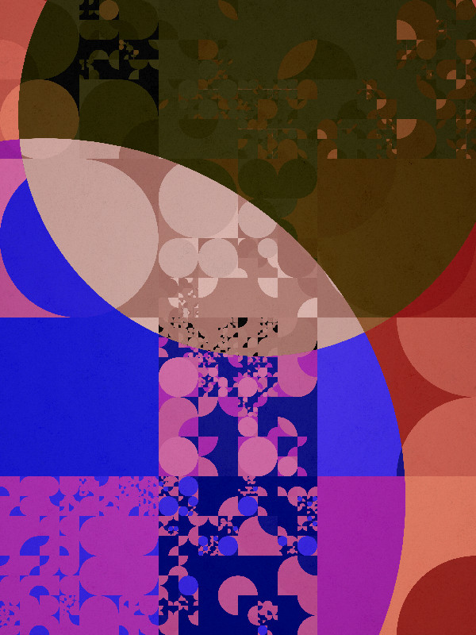
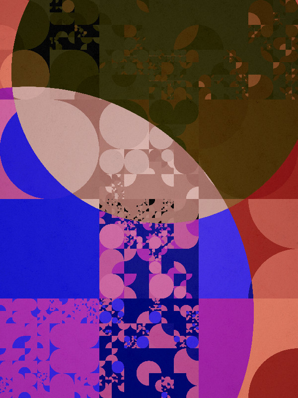

Dimensions

Part 1. Generative art
Generative art is a kind of art where a set of rules creates the artwork, instead of the artist rendering it manually.
These rules are usually in the form of computer programs written by the artist.
Since I know more about coding than actual artistic skills, this is exactly the right stuff for this project.

Example of generative art
One of the simpler kinds of generative art revolves around tessellations or tilings.
The main idea was that the whole image would be a random arrangement of square tiles. The tiles would be laid out side-by-side with no overlaps nor gaps. The resulting geometric pattern itself would be the source of aesthetic value.
I wanted to symbolize Creativity, one of the event’s themes. Creative tools and instruments served as inspiration for the tiles’ appearances.

Pen, paper, pencil, brush, and tablet: these would become the building blocks of the piece.
Testing some random tiling
In designing the individual tiles I restricted them to one basic shape — a quarter circle — as basis for the tiles’ forms.
 Studies of how different tilesets look in the same tiling compositions
Studies of how different tilesets look in the same tiling compositions
The point of limiting to one basic shape was to create unity across the whole piece and mitigate chaos from the randomness of the algorithm.
 Tile types from left to right: a paintbrush head, paper with dog-ear fold, pencil tip, fountain pen tip, and a tablet
Tile types from left to right: a paintbrush head, paper with dog-ear fold, pencil tip, fountain pen tip, and a tablet
The tiles’ curves should seamlessly connect with neighboring tiles, forming more complex shapes like semicircles and S-curves.
After some more doodling around, it was time to code!
Rendering the image
The image generator was implemented in JavaScript with Vue.js. The individual shapes themselves were implemented using CSS (lots of border-radius!).
The image generation process worked along these lines:
Make a 9in × 12in board, subdivided into a 6 × 8 grid of tiles.
 .board { display: grid }
.board { display: grid }
That day I learned that CSS inches don’t actually match physical inches on a computer screen.
For each cell, randomly render any of the five tile types:
 Random tiles added with placeholder colors. Board truncated to a square here for brevity.
Random tiles added with placeholder colors. Board truncated to a square here for brevity.
Each tile is randomly rotated in 90-degree increments, or flipped horizontally or vertically.
 Tiles randomly oriented
Tiles randomly oriented
You may start seeing some semicircles and larger contours forming across tiles.
Contours highlighted via edge detector. The effect actually looks cool though. This could’ve been an entirely different direction for the piece!
See those other shapes emerging from the five basic tiles? If you squint hard enough, you might be able to see a Pacman, maybe an apple logo, or maybe a bird.
Emergence is a common feature of generative art. It’s the idea that something more arises from simple systems — whether intentional or coincidental. A good example of emergence is fractal art.
Anyway, the next step was to pick a palette from a color scheme generator (because everything’s generated!), and randomly assign each region a color.
 Each tile colored randomly
Each tile colored randomly
Random noise textures were overlayed as well. The textures were generated solely using GIMP’s noise generators and filters. Could’ve implemented a live texture generator into the renderer, but time was limited.
The result of all the rules above was this:
 First decent result
First decent result
I was pretty happy with the results so far. This one could probably pass as MVP.
However, it was kinda monotonous. There was a lack of structure or composition in the image.
This is the downside of tile-based algorithms. But nothing that can’t be fixed!
I added big off-grid circles, which manifested as different color schemes for intersecting tiles.
 Circle intersections added
Circle intersections added
It got contrasting regions, which should improve composition. Points of interest also emerged from the intersections between edges, and it broke the monotony of the grid.
I implemented this effect by overlaying multiple copies of the board, each copy having a different palette. Then on each copy I applied circular clipping masks (CSS clip-path) that correspond to regions in the image.
Next tweak was on color selection. I changed the selection from a uniform random distribution to a normal distribution.
Instead of having equal chances for each color to be picked, colors in the middle of the palette got higher chances of getting picked than those near the ends.
 Uniform palette distribution (left) and normal distribution (right, not to scale!)
Uniform palette distribution (left) and normal distribution (right, not to scale!)
This made some colors more prominent than others, building a hierarchy of colors that produced a less chaotic image.
 Experimenting with color schemes and tile sizes
Experimenting with color schemes and tile sizes
The image generation algorithm evolved a little more before reaching the final form.
The final form (almost)
Generative art is fun! It’s experimental, explorative, and iterative!
Going back to the exhibit: each participant can submit a maximum of six pieces. So far I’ve got one.
Fortunately, I could just generate more pieces to submit if I wanted!
So I randomized the parameters, generated hundreds of instances, and picked some of the good ones.

I could’ve randomized the palette each time too, but color is tricky and best left to human eyes.
All that’s left was adding the QR code that would link to the augmented reality app.
The QR code would connect the physical and the virtual components, making it a seamless single experience.
Adding the QR code involved changing the center tiles to a lighter palette before adding in the code, ensuring that the code will be readable in every randomly-generated instance of the piece.
The final set
And that’s it for the physical prints! The next part is about the non-physical half of the piece, the augmented reality component.
Part two: Augmented reality
Bonus art: randomized color scheme and recursive tiles edition!
This is a post-exhibit version, where I finally figured out color palette generation, and made the tiles recursive.
 “Frog”
“Coffee”
“Frog”
“Coffee”
 “Earth”
“Earth”
Part two: Augmented reality